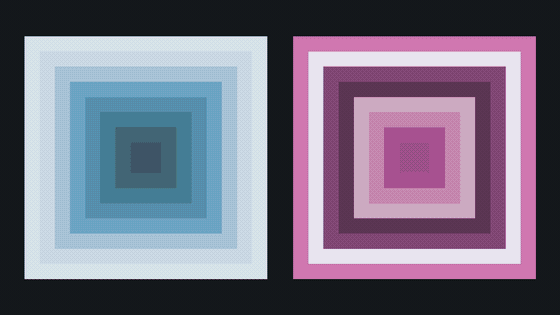

Open the live stream on YouTube
Two panels of concentric squares, one ordered and one scrambled. A radio listens for aircraft overhead. Each new contact plays the next note of Erik Satie's Gymnopedie No. 1 and shifts the panels' colors. Heavy aircraft carry the melody, and each one brings in a new palette that never repeats. Lighter aircraft play the accompaniment and drift the hues within that palette. When the sky empties, the bands breathe in a slow ripple over a low pedal drone, waiting.
Satie fixed the pitches and Frank Stella fixed the geometry, but the traffic sets the rhythm. So the piece changes by the hour: busy during the day, sparse and still late at night. Every note you hear is an aircraft, named briefly at the edge of the frame.
30-second silent looping excerpt, the live stream does not repeat

Inspired by Leo Villareal's Double Scramble, which I saw in Run the Code at the Blanton Museum of Art in June 2026. His piece was itself inspired by Stella's Double Scramble.